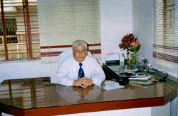

Home
Vision
History
Location
Organisation
Curriculum
School Uniform
Teaching Staff
Facilities
Activities
Rules
Register online
Photogallery
Contact Us
Site Map
Vision

With the enduring words of the Bhagavad Gita “ Actionis better than inaction”., Calcutta Public School was founded by Shri Bhogendra Jha in 1998 at Aswininagar, Baguiati, Kolkata – 59. It has its own ambitious vision for education.
In the fast changing scenario of education which aims at the infrastructure activities and career orientation this school moves fast and wishes to foster a substantial moral leadership which accounts for an individual direction and persistence of efforts towards attaining a goal. That goal is not to look at in isolation. It has its own integrated information and comprehension in imparting best quality and productivity in the sphere of education improving education so that the growing children can triumph over the most prestigious competitions. The school faces a multitude of aggressive bottlenecks, yet it has “ The ability to produce novel and useful ideas”.
The school has a sound facilitating team work and work-culture. The management, the teachers and the students move on with unstinted efforts to get at what has been thought best in learning. Learning involves change and the change has been brought from concept to skills. The school has its own committed work-force and the teachers are quite conscientious in honest labour and the children are adventurous in the quest for knowledge. The school with its own mental-map moves apace and learns; “ Every great and commanding movement in the annals of the world in the triumph of enthusiasm” - Emerson.
Powered by Google.com